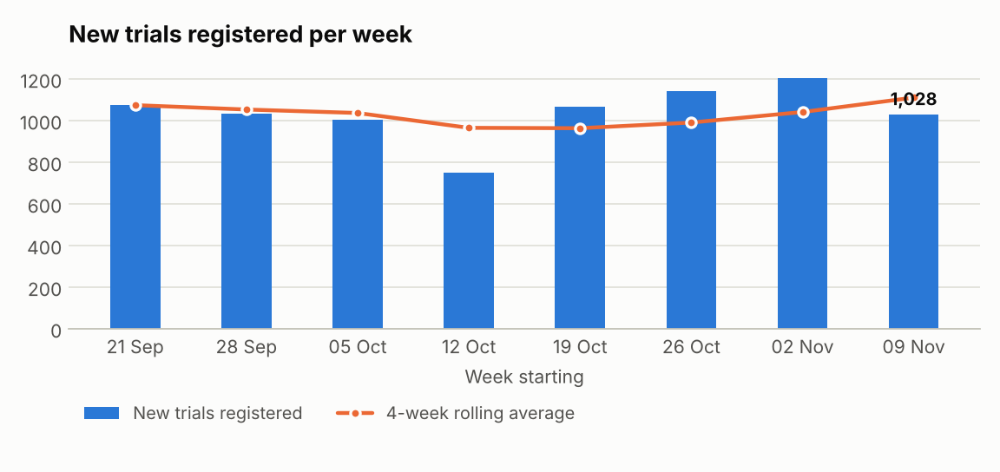
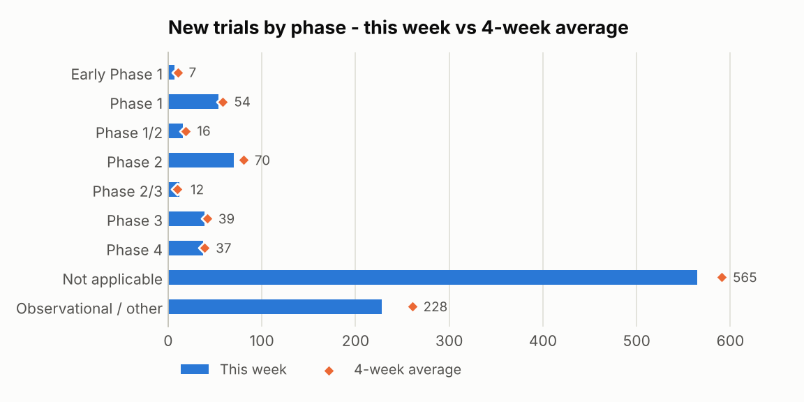
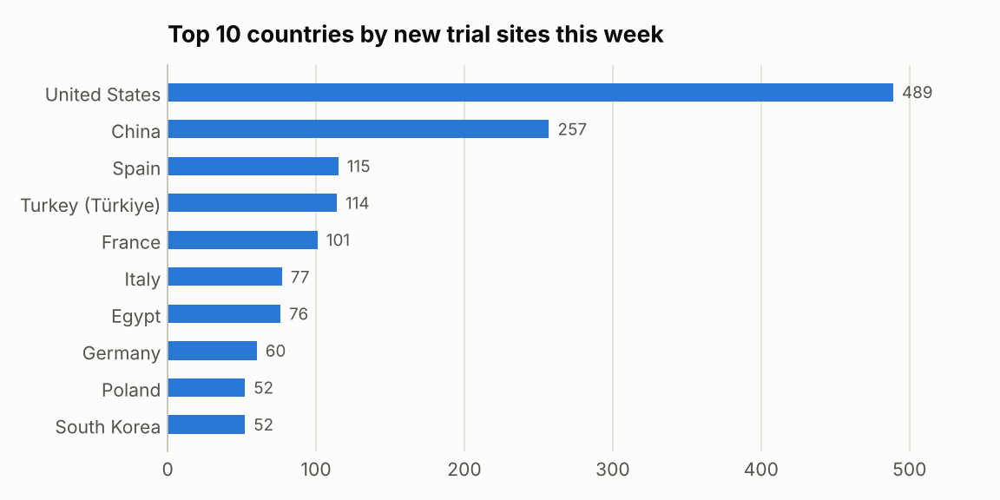

Week of 09 Nov 2026 - 15 Nov 2026 · source: ClinicalTrials.gov API v2 · run 2026-11-16
| KPI | This week | vs last week | 4-wk avg |
|---|---|---|---|
| New trials registered | 1,028 | ▼ -177 (-14.7%) vs last week | 1,110 |
| Confirmed status changes | 0 | ▬ +0 vs last week | 0 |
| Industry-sponsored share of new trials | 15.2% | ▲ +0.4 pts vs last week | 15.3% |
| Median planned enrollment (new trials) | 90 | ▲ +10 (+12.5%) vs last week | 86 |
| New trial sites | 2,088 | ▼ -302 (-12.6%) vs last week | 2,124 |



| Phase | New trials | WoW | 4-wk avg | Median planned enrollment |
|---|---|---|---|---|
| Early Phase 1 | 7 | ▬ +0 | 10.2 | 20 |
| Phase 1 | 54 | ▼ -19 | 58.5 | 42 |
| Phase 1/2 | 16 | ▼ -3 | 19 | 68 |
| Phase 2 | 70 | ▼ -22 | 80.5 | 86 |
| Phase 2/3 | 12 | ▲ +4 | 10 | 178 |
| Phase 3 | 39 | ▼ -5 | 41.8 | 312 |
| Phase 4 | 37 | ▼ -6 | 39 | 95 |
| Not applicable | 565 | ▼ -91 | 591 | 75 |
| Observational / other | 228 | ▼ -35 | 260 | 200 |
By sponsor class
|
Top 10 conditions
|
No confirmed (SCD2) status transitions were detected this week.
Stopped-trial counts are point-in-time and are not reported for backfilled weeks.
| Country | New sites | WoW |
|---|---|---|
| United States | 489 | ▼ -1 |
| China | 257 | ▼ -230 |
| Spain | 115 | ▲ +54 |
| Turkey (Türkiye) | 114 | ▼ -15 |
| France | 101 | ▲ +9 |
| Italy | 77 | ▼ -39 |
| Egypt | 76 | ▲ +8 |
| Germany | 60 | – |
| Poland | 52 | – |
| South Korea | 52 | – |
Generated 2026-11-24 15:02 UTC by the Automated KPI Reporting Pipeline v1.0.0 · 8 week(s) of history · full dataset: reports/kpi_history.csv